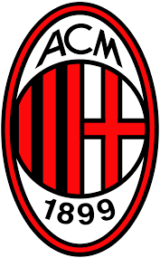

| الـبــيـــانــات الــشــخــصــيــة | |
| الاسم الكامل | زلاتان إبراهيموفيتش |
| تاريخ الميلاد | 3 اكتوبر 1981 |
| محل الميلاد | مالمو، السويد |
| العمر | 40 سنة |
| الطول | 1.95 متر |
| الجنسية | بوسني -السويد |
| محل الاقامه الحالية | السويـــــد |
| مركز اللعب | مــهـــاجــم |
زلاتان إبراهيموفيتش (التلفظ السويدي: [ˈslǎːtan ɪbraˈhǐːmovɪtɕ]؛ تلفظ بوسني: [zlǎtan ibraxǐːmoʋitɕ]؛ مواليد 3 أكتوبر 1981) هو لاعب كرة قدم سويدي يلعب في مركز الهجوم مع نادي إيه سي ميلان في الدوري الإيطالي الدرجة الأولى. مهاجم من الطراز الرفيع ويسجل الأهداف بغزارة واشتهر بأسلوب لعبه المبدع والقوة وقدرته في الكرات الهوائية ودقة تسديداته القوية. وهو الآن ثالث أكثر لاعب كرة القدم نشط يملك ألقاب جماعية في العالم،[note 1] بعد حصوله على 32 بطولة في مسيرته. وقد سجل أكثر من 500 هدف في مسيرته مع النادي والمنتخب كبيرا للنادي والوطن.
بدأ إبراهيموفيتش مسيرته الكروية في نادي مالمو في أواخر التسعينات، ثم وقع لنادي أياكس حيث صنع سمعة جيدة كلاعب محترف مع المدرب رونالد كومان. انتقل لاحقاً إلى يوفنتوس وقد نال شهرة واسعة في الدوري الإيطالي بسبب شراكة مع دافيد تريزيغيه، قبل انضمامه إلى غريمه المحلي إنتر ميلان في عام 2006، حيث تم اختياره ضمن تشكيلة الاتحاد الأوربي لكرة القدم خلال العام في عامي 2007 و2009. وبالإضافة إلى ذلك، سينهي إبراهيموفيتش صدارة قائمة هدافي الدوري الإيطالي لموسم 2008–09، ويفوز بثلاث دوري له على التوالي. في صيف عام 2009، انتقل إلى برشلونة في واحدة من أغلى عمليات الانتقال في العالم آنذاك، قبل أن يعود إلى إيطاليا في الموسم التالي، لينضم إلى ميلان في صفقة جعلت منه واحدا من اللاعبين الأعلى أجرا في العالم.
فاز بلقب دوري آخر مع ميلان في موسم 2010–11، قبل أن ينضم إلى باريس سان جيرمان في يوليو 2012. خلال فترة إقامته في فرنسا لمدة أربعة مواسم، فاز إبراهيموفيتش بأربع ألقاب متتالية في الدوري وثلاثة ألقاب من كأس الرابطة الفرنسية ولقبين من كأس فرنسا وكان هداف الدوري الفرنسي لثلاثة مواسم. تم اختياره ضمن تشكيلة فيفبرو لعام 2013.
في أكتوبر 2015، أصبح هداف باريس سان جيرمان التاريخي، وأنهى مسيرته معهم بتسجيله 156 هدف في 180 مباراة رسمية. بعد فترة قصيرة قضاها مع مانشستر يونايتد، حيث فاز معهم بلقب الدوري الأوروبي ولقبيين محليين، انضم إبراهيموفيتش إلى لوس أنجلوس غلاكسي في عام2018 حتى عام 2019، حيث تعاقد مع نادي إيه سي ميلان.